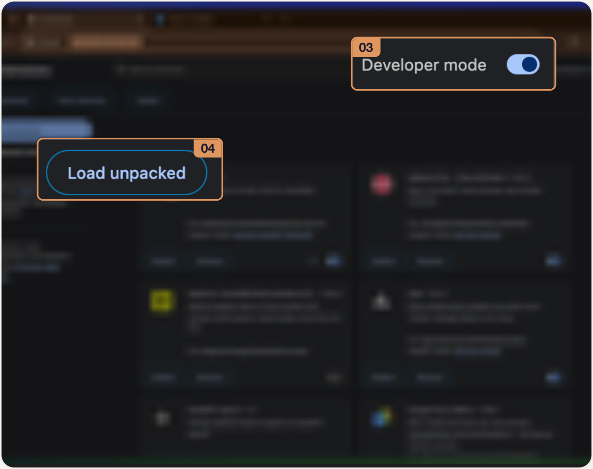
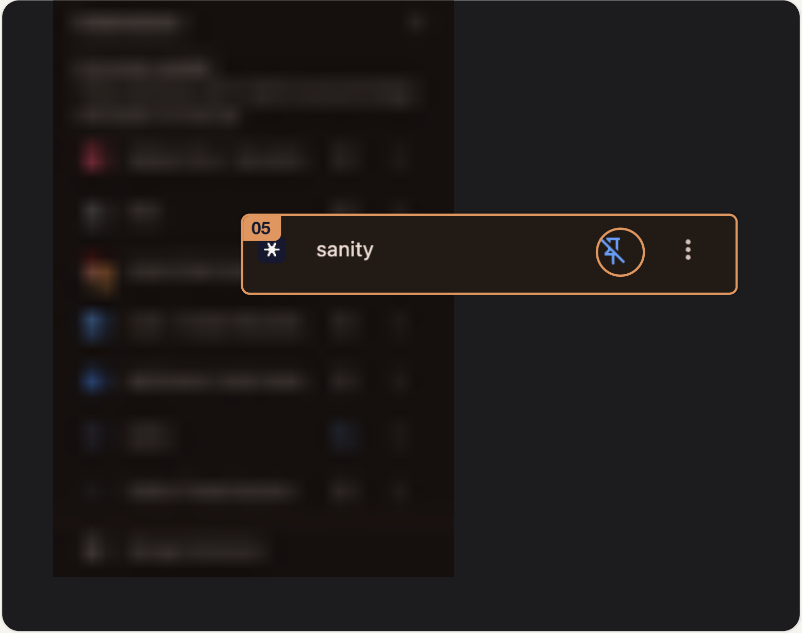

A Chrome extension I built for myself
LinkedIn now locks me out.
On purpose. After the minutes I asked for.
That’s enough.
LinkedIn still matters for the business. So does leaving it. Close the tab and go build.
You came to check notifications. Asked for 10 min – stayed 1 min.
02 / Why it exists
I built it for myself.
I love LinkedIn
as much as I hate it.
It keeps LinkedIn useful for work without letting the feed eat the day. Built for people who need LinkedIn for GTM but can’t afford losing their sanity.
03 / What it does
The whole thing, one page
- 01 Asks what you’re there to do before LinkedIn loads.
- 02 Six intents: message, post, research, inbox, notifications, scroll & comment.
- 03 A timer you set, 5 to 25 minutes.
- 04 Countdown on the Chrome badge and in the popup.
- 05 A soft bell at the end, then LinkedIn locks.
- 06 Closing the tab early ends the session and logs how long you stayed.
- 07 Daily limits on minutes and sessions, reset each local day.
- 08 A one-hour pause, for when you really need it.
04 / The gate
It asks before it opens
When you open LinkedIn, Sanity asks what you’re there to do and for how long.
What are you here to do?
You already know how this tab ends. Name the job, set a clock, then get out.
How long
05 / Intent and clock
Name the job, set a clock
You pick an intent (message, post, research, inbox, notifications, or scroll & comment) and a timer (5–25 min).
How long
06 / While you work
The clock lives in the toolbar
LinkedIn then opens normally and the timer runs on the Chrome badge / popup.
The badge counts down while you work.
✻sanity
Running
Time left
9:48
Check notifications
End session & lockToday
2 sessions · 1 / 45 min
The popup shows the intent, the time left, and one button out.
07 / Time’s up
Then it locks
When time’s up, a soft bell rings and LinkedIn locks until you leave or start another session.
That’s enough.
LinkedIn still matters for the business. So does leaving it. Close the tab and go build.
You came to check notifications. Asked for 10 min – stayed 1 min.
08 / On the way out
One detour allowed
The lock screen offers a quote before you go. Then the tab closes.
You are the sky. Everything else — it’s just the weather.
— Pema Chödrön
Leave LinkedIn Back09 / Limits and break glass
You set the budget
Daily limits (minutes + sessions) reset each local calendar day; you can pause sanity for an hour if you really need to. Closing the LinkedIn tab early ends the session and logs how long you stayed.
Settings
Contain LinkedIn without quitting it.
Sessions / day
UnlimitedHow many LinkedIn visits you allow yourself.
Unlimited
+10 / How to get it
It’s free. Ask and I’ll send it.
I’m not a developer, so it isn’t on the Chrome store. Installing takes about a minute and I’ll walk you through it.
11 / Install
Four steps, one minute
- 01Save the sanity folder somewhere on your computer.
- 02Open
chrome://extensions/. - 03Turn on Developer mode.
- 04Click Load unpacked and select the sanity folder.

12 / Last step
Pin it so you see the timer
Click the extensions icon in Chrome’s toolbar and pin sanity. Then open LinkedIn — it will ask what you’re there to do.
